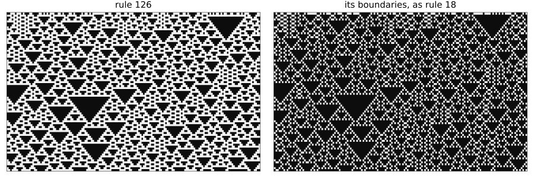
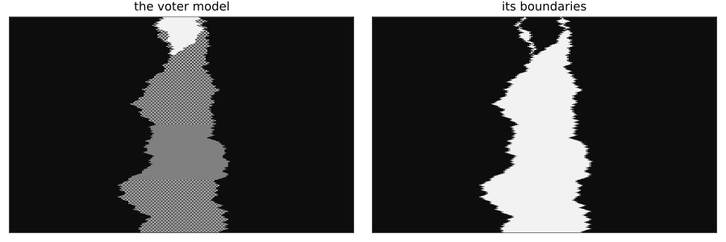

Maps that read neighbours
Simon Frost
- Overview
- The boundaries of a rule
- Which rules have boundaries that are a rule
- Two species that copy
- Composing maps
- Building the codomain
- Limits
- Summary
- References
Overview
A ModelMap looks at one cell at a time, so it cannot see anything that lies between cells, such as the boundary between two species. A SlidingBlockMap reads a window around each cell, as a rule reads its neighbourhood. These are the sliding block codes of symbolic dynamics (Hedlund 1969; Lind and Marcus 1995). Like a ModelMap, one is a map of models when it commutes with the two models’ steps, and every run then maps to a run exactly.
This is a research extension, beyond the papers the package implements. The models are small ones written for the purpose, until the last section, which forgets a layer of a published model.
ENV["GKSwstype"] = "100"
using CategoricalCellularAutomata
using CellularAutomataCore
using EcologicalCellularAutomata
using Random
using PlotsThe boundaries of a rule
Mark the boundaries of a configuration: a cell of the new state says whether the cell and the next one differ. For elementary rule 126 that gives rule 18 exactly. is_model_map(f; dims=1) tries every assignment to the cells that the two ways round the square read, which for a deterministic rule is a proof on a torus. Running a problem checks every saved state:
bit() = [StateVariable(:x, 0; domain=(0, 1))]
eca(n) = CAModel(Wolfram(n); name=Symbol("rule", n), states=bit())
boundary(c, nbrs) = xor(c, nbrs[1])
next_cell = Offsets((1,))
rule126, rule18 = eca(126), eca(18)
f = SlidingBlockMap(rule126, rule18, boundary, next_cell)
prob = CAProblem(rule126, (; x=rand(Xoshiro(1), 0:1, 160)), 80; space=Torus(160), seed=1)
(rules_commute=is_model_map(f; dims=1), a_run=is_model_map(f, prob))(rules_commute = true, a_run = true)spacetime(sol) = reduce(hcat, sol.u)'
plot(heatmap(spacetime(solve(prob)); c=:grays, colorbar=false, yflip=true,
title="rule 126", titlefontsize=10),
heatmap(spacetime(solve(pushforward(f, prob))); c=:grays, colorbar=false, yflip=true,
title="its boundaries, as rule 18", titlefontsize=10);
layout=(1, 2), size=(900, 300), ticks=false, framestyle=:box)
No cell-by-cell map could do this, since two cells in the same state can have different boundaries beside them. The Lean library proves that, and that sliding maps send runs to runs (kinkMap126_not_cellwise, SlidingMap.run_map).
Which rules have boundaries that are a rule
There are only 256 elementary rules, so all 65536 pairs can be tried:
models = [eca(n) for n in 0:255]
found = [(F, G)
for F in 0:255, G in 0:255
if is_model_map(SlidingBlockMap(models[F + 1], models[G + 1], boundary, next_cell);
dims=1, contexts=1)]
bit_of(n, k) = (n >> k) & 1
same_under_complement(F) = all(k -> bit_of(F, k) == bit_of(F, 7 - k), 0:3)
flips_under_complement(F) = all(k -> bit_of(F, k) != bit_of(F, 7 - k), 0:3)
respects(F) = same_under_complement(F) || flips_under_complement(F)
(pairs=length(found), every_rule_has_at_most_one=allunique(first.(found)),
exactly_those_that_respect_complements=sort(first.(found)) == filter(respects, 0:255),
some=found[1:8])(pairs = 32, every_rule_has_at_most_one = true, exactly_those_that_respect_complements = true, some = [(0, 0), (255, 0), (126, 18), (129, 18), (66, 46), (189, 46), (60, 60), (195, 60)])The boundaries do not change if every cell is complemented. A rule has boundaries that are a rule when it treats a configuration and its complement alike, or swaps their results. There are 16 rules of each kind, and these are the 32 pairs. This is what the factor theorems in the Lean library would predict: through a surjective cellular automaton, a factor exists exactly when the rule respects the fibres, and it is then a unique cellular automaton (factor_exists_iff, factor_unique, factor_isCA). They do not apply directly on a ring, where this map reaches only configurations with an even number of boundaries, so here the search is the evidence.
Two species that copy
A stochastic model needs more. In the voter model two species compete by copying (Clifford and Sudbury 1973; Holley and Liggett 1975): here, at each step, every cell takes the state of its left or right neighbour on a coin. The next boundary between two cells depends on both of their coins, so the rule of the boundaries has to read the coin of the next cell as well as its own. A CellContext with another cell’s id gives that cell’s numbers:
N = 200
coin(ctx) = uniform(ctx, 1) < 0.5 ? -1 : 1
sides = Offsets((-1,), (1,))
voter = CAModel(LocalRule((c, nbrs, ctx) -> coin(ctx) < 0 ? nbrs[1] : nbrs[2], sides);
name=:voter, states=bit())
function wall_rule(c, nbrs, ctx)
next = CellContext(ctx.p, ctx.index, ctx.t, mod(ctx.cellid, N) + 1, ctx.seed)
a, b = coin(ctx), coin(next)
a < 0 && b < 0 && return nbrs[1]
a > 0 && b > 0 && return nbrs[2]
return a < 0 ? xor(nbrs[1], c, nbrs[2]) : c
end
walls = CAModel(LocalRule(wall_rule, sides); name=:walls, states=bit())
own_coin = CAModel(LocalRule((c, nbrs, ctx) -> coin(ctx) < 0 ? nbrs[1] : nbrs[2], sides);
name=:own_coin, states=bit())
to_walls = SlidingBlockMap(voter, walls, boundary, next_cell)
start = zeros(Int, N)
start[90:110] .= 1
block = CAProblem(voter, (; x=start), 400; space=Torus(N), seed=1)
(walls_with_both_coins=is_model_map(to_walls, block),
local_check=is_model_map(to_walls; space=Torus(N), contexts=64),
with_its_own_coin=is_model_map(SlidingBlockMap(voter, own_coin, boundary, next_cell), block))(walls_with_both_coins = true, local_check = true, with_its_own_coin = false)The map holds on every path, whichever coins are drawn, and the Lean library proves that no rule reading only its own coin could do this on a ring of four or more cells (wallsMap, walls_need_other_coins).
The rule of the boundaries then says something about the model. When a cell copies from its left and the next cell from its right, the new boundary is the sum of three old ones, so one boundary can become three. In continuous time, where one cell changes at a time, a boundary can only move or meet another. With every cell copying at once it can split:
block_run = solve(block)
block_walls = solve(pushforward(to_walls, block))
plot(heatmap(spacetime(block_run); c=:grays, colorbar=false, yflip=true,
title="the voter model", titlefontsize=10),
heatmap(spacetime(block_walls); c=:grays, colorbar=false, yflip=true,
title="its boundaries", titlefontsize=10);
layout=(1, 2), size=(900, 300), ticks=false, framestyle=:box)
Updating one cell at a time shows the difference, with the same model and the same start. The boundaries of each saved state are counted by pushforward(to_walls, u, space):
count_walls(sol) = [sum(pushforward(to_walls, u, block.space)) for u in sol.u]
at_once = count_walls(block_run)
one_at_a_time = count_walls(solve(block, RandomSequential()))
(at_once=(start=at_once[1], peak=maximum(at_once), rises=count(>(0), diff(at_once))),
one_at_a_time=(start=one_at_a_time[1], peak=maximum(one_at_a_time),
rises=count(>(0), diff(one_at_a_time))))(at_once = (start = 2, peak = 60, rises = 109), one_at_a_time = (start = 2, peak = 2, rises = 0))So the boundaries of this synchronous model are not the annihilating walks of the continuous-time one. Each cell reads only its two neighbours, so the odd and the even cells are two voter models that take turns, and the runs can end in two ways: one species, or perfect alternation, in which all the cells are boundaries. On a ring of 200 cells, from a random start:
map(1:4) do seed
p = CAProblem(voter, (; x=rand(Xoshiro(seed), 0:1, N)), 3000; space=Torus(N), seed)
w = count_walls(solve(p))
(; seed, is_map=is_model_map(to_walls, p), start=w[1], at_1000=w[1001], at_3000=w[3001],
always_even=all(iseven, w))
end4-element Vector{@NamedTuple{seed::Int64, is_map::Bool, start::Int64, at_1000::Int64, at_3000::Int64, always_even::Bool}}:
(seed = 1, is_map = 1, start = 98, at_1000 = 116, at_3000 = 144, always_even = 1)
(seed = 2, is_map = 1, start = 106, at_1000 = 200, at_3000 = 200, always_even = 1)
(seed = 3, is_map = 1, start = 106, at_1000 = 44, at_3000 = 0, always_even = 1)
(seed = 4, is_map = 1, start = 96, at_1000 = 50, at_3000 = 72, always_even = 1)The number of boundaries on a ring is always even, since each must be crossed back.
Composing maps
Maps compose, and the window of a composite holds the sums of the two windows’ offsets. Rule 90 commutes with the boundary map, so the map can be applied twice, reading two cells ahead:
rule90 = eca(90)
φ = SlidingBlockMap(rule90, rule90, boundary, next_cell)
twice = compose(φ, φ)
small = [0, 1, 1, 0, 1, 0, 0, 0]
(window=twice.window, is_map=is_model_map(twice; dims=1),
reads_two_cells_ahead=pushforward(twice, small, Torus(8)) ==
[xor(small[i], small[mod1(i + 2, 8)]) for i in 1:8])(window = Offsets((1,), (2,)), is_map = true, reads_two_cells_ahead = true)ModelMaps are the case of an empty window, so the two kinds compose. A composite can be a map when one of its parts is not. Complementing is not a map from rule 90 to itself, since the parity of two complements is the parity of the originals. Complementing before taking boundaries is one, as the boundaries cannot see it, and complementing after is not:
complement = ModelMap(rule90, rule90, c -> 1 - c; parameters=identity)
(complement_alone=is_model_map(complement; dims=1),
complement_first=is_model_map(compose(complement, φ); dims=1),
complement_after=is_model_map(compose(φ, complement); dims=1))(complement_alone = false, complement_first = true, complement_after = false)A sliding map can be undone cell by cell. Writing a state as pairs of neighbouring cells, the higher block presentation of symbolic dynamics, gives a model with the same dynamics, and forgetting the second of each pair undoes it, so the composite is the identity. Forgetting is not a map on the whole of the pairs model, since a cell’s pair can disagree with its neighbour’s there. It is one on the states that come from the original, as running from one of them shows:
step110(l, m, r) = (110 >> (4l + 2m + r)) & 1
pairs = CAModel(LocalRule((c, nbrs, ctx) -> (a=step110(nbrs[1].a, c.a, c.b),
b=step110(c.a, c.b, nbrs[2].b)), sides);
name=:pairs, states=[StateVariable(:a, 0; domain=(0, 1)),
StateVariable(:b, 0; domain=(0, 1))])
rule110 = eca(110)
up = SlidingBlockMap(rule110, pairs, (c, nbrs) -> (a=c, b=nbrs[1]), next_cell)
down = ModelMap(pairs, rule110, c -> c.a)
u = rand(Xoshiro(2), 0:1, 48)
from_the_original = pushforward(up, CAProblem(rule110, (; x=u), 30; space=Torus(48), seed=2))
(up_is_a_map=is_model_map(up; dims=1), down_on_every_pair=is_model_map(down; dims=1),
down_on_a_run_from_the_original=is_model_map(down, from_the_original),
there_and_back_is_a_map=is_model_map(compose(up, down); dims=1),
there_and_back_is_the_identity=pushforward(compose(up, down), u, Torus(48)) == u)(up_is_a_map = true, down_on_every_pair = false, down_on_a_run_from_the_original = true, there_and_back_is_a_map = true, there_and_back_is_the_identity = true)Sliding maps form a category that holds the cell-by-cell maps as a subcategory (instCategorySlidingModels, ModelMap.slidingFunctor).
Building the codomain
So far the codomain has been written by hand. If the map down reads one cell and the lift reads neighbours, the codomain can come from the domain’s own rule: quotient(model, h, section, window) lifts the cell and each neighbour the rule reads, applies the rule, and maps the result down, so the new rule reads further than the old one. The second of each pair in the last section can be rebuilt from the next cell, and the quotient of the pairs model is then rule 110 again. That is checked on every configuration, with no copy of rule 110 in the construction:
forget_second = quotient(pairs, c -> c.a, (a, nbrs) -> (a=a, b=nbrs[1]), next_cell;
states=bit(), dims=1)
agreeing = (a=u, b=circshift(u, -1))
start_pairs(v) = CAProblem(pairs, v, 30; space=Torus(48), seed=2)
(rebuilt_rule_is_110=is_model_map(SlidingBlockMap(forget_second.codom, rule110, (c, _) -> c,
nothing); dims=1),
on_every_pair=is_model_map(forget_second; dims=1),
from_pairs_that_agree=is_model_map(forget_second, start_pairs(agreeing)),
from_pairs_that_do_not=is_model_map(forget_second,
start_pairs((a=u, b=1 .- circshift(u, -1)))))(rebuilt_rule_is_110 = true, on_every_pair = false, from_pairs_that_agree = true, from_pairs_that_do_not = false)This is why the local check can say no while a run says yes. The map holds on the states where what is forgotten agrees with the section, for as long as a run stays among them, and not on the others. The Lean library proves both (SlidingLumping.run_consistent, pairLumping_not_descends), and that the new step reads a finite window and is the only one the map can commute with (SlidingLumping.stepQ_reads, SlidingLumping.stepQ_unique).
So a layer that feeds back can go, if a cell can work it out from its neighbours. The regional model of pesticide resistance (Peck and Ellner 1997) stores each field’s number of neighbours in the lattice, and its rule reads that, so filling the layer with a default changes the run. But a field’s neighbours are those with a carrying capacity, as the fixed edge of the grid reads as zero. forget_layers(...; rebuild, window) says so, and the whole run is then reproduced exactly:
count_fields(c, nbrs) = (; neighbours=Int8(c.K > 0 ? count(n -> n.K > 0, nbrs) : 0))
map((:von_neumann => VonNeumann(1), :moore => Moore(1))) do (neighbourhood, window)
regional = build_resistance_regional(; neighbourhood)
p = problem(:resistance_regional; neighbourhood)
(; neighbourhood, generations=p.tspan[2],
with_a_default=is_model_map(forget_layers(regional, :neighbours), p),
rebuilt=is_model_map(forget_layers(regional, :neighbours; rebuild=count_fields, window), p))
end((neighbourhood = :von_neumann, generations = 250, with_a_default = false, rebuilt = true), (neighbourhood = :moore, generations = 250, with_a_default = false, rebuilt = true))The claim belongs to the problem, as ever. A state with a wrong count is not consistent, and if refuges have no carrying capacity (kappa = 0) the count no longer finds them:
no_neighbours = forget_layers(build(:resistance_regional), :neighbours; rebuild=count_fields,
window=VonNeumann(1))
default_problem = problem(:resistance_regional)
wrong_count = merge(default_problem.u0, (; neighbours=fill(Int8(4), size(default_problem.u0.K))))
(default_settings=is_model_map(no_neighbours, default_problem),
wrong_count=is_model_map(no_neighbours, remake(default_problem; u0=wrong_count)),
refuges_with_no_capacity=is_model_map(no_neighbours, problem(:resistance_regional; kappa=0.0)))(default_settings = true, wrong_count = false, refuges_with_no_capacity = false)Limits
An edge is read as a rule reads it, and that counts. Rule 90 and the boundary map commute on a torus, but on a grid with fixed edges the map reads the constant at one end, and the rule reads the same constant among the boundaries, where it stands for something else:
edges = rand(Xoshiro(3), 0:1, 32)
(torus=is_model_map(φ, CAProblem(rule90, (; x=edges), 30; space=Torus(32))),
grid=is_model_map(φ, CAProblem(rule90, (; x=edges), 30; space=Grid(32; boundary=Constant(0)))))(torus = true, grid = false)Other limits:
- A map that reads a window has no section in general, and then the codomain is written by hand and a callback cannot move with it. With a section,
callback=:liftand:lift_stepwork. A quotient has a map down that reads one cell, since a rule can draw only its own cell’s random numbers. - A section that reads neighbours adds to the rule’s reach, and needs a lattice. It refuses block and event rules and models with kernel fields.
- The local check is for rules that name their neighbourhood, without covariates or kernel fields. Block rules, event rules and models that read covariates are checked by running.
- A
truefrom a run holds for that problem and span, as for any map. - Composing two sliding maps needs their windows as
Offsets, so a composite of two on a graph, whose neighbours have no offsets, is refused. Composing with aModelMapworks on any space.
Summary
| relation | check | result |
|---|---|---|
| rule 126 → rule 18, by boundaries | every local assignment; run | a map |
| 65536 pairs of elementary rules, by boundaries | every local assignment | 32 maps, those that respect complements, and at most one for each rule |
| voter model → its boundaries, both coins | run; local check at 64 contexts | a map |
| voter model → a rule with one coin | run | not a map; none exists on a ring of four or more cells |
| rule 90, boundary map twice | every local assignment | a map |
| complementing rule 90 | every local assignment | not a map |
| complementing, then boundaries | every local assignment | a map |
| rule 110 → its pairs | every local assignment | a map |
| its pairs → rule 110, forgetting | every local assignment; run from the original | not a map; agrees on that run |
| rule 110 → its pairs → rule 110 | every local assignment | a map, the identity |
| pairs → their quotient, forgetting the second | every local assignment; run from pairs that agree; from pairs that do not | not a map; a map; not a map |
| that quotient → rule 110 | every local assignment | a map, the identity |
regional resistance without neighbours, a default | run | not a map |
regional resistance without neighbours, rebuilt from neighbours | run, both neighbourhoods | a map |
the same, a wrong count, or kappa = 0 | run | not a map |
| rule 90, boundary map, grid with fixed edges | run | not a map |
References
Clifford, Peter, and Aidan Sudbury. 1973. “A Model for Spatial Conflict.” Biometrika 60 (3): 581–88. https://doi.org/10.1093/biomet/60.3.581.
Hedlund, G. A. 1969. “Endomorphisms and Automorphisms of the Shift Dynamical System.” Mathematical Systems Theory 3 (4): 320–75. https://doi.org/10.1007/BF01691062.
Holley, Richard A., and Thomas M. Liggett. 1975. “Ergodic Theorems for Weakly Interacting Infinite Systems and the Voter Model.” The Annals of Probability 3 (4): 643–63. https://doi.org/10.1214/aop/1176996306.
Lind, Douglas, and Brian Marcus. 1995. An Introduction to Symbolic Dynamics and Coding. Cambridge University Press. https://doi.org/10.1017/CBO9780511626302.
Peck, Steven L., and Stephen P. Ellner. 1997. “The Effect of Economic Thresholds and Life-History Parameters on the Evolution of Pesticide Resistance in a Regional Setting.” The American Naturalist 149 (1): 43–63. https://doi.org/10.1086/285978.